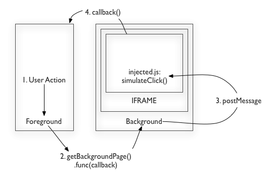

Chrome Extension for thesixtyone
It's a little late to join the Chrome Extension writing party, and unfortunately still too early for the Chrome Web Store launch. Timing issues aside, here's an extension that presents thesixtyone.com in a smaller, simpler interface, effectively saving a tab in Chrome and removing all of the (useless to me) social game mechanics from thesixtyone. This post walks through some technical details of the implementation, message passing between pages of an extension, JavaScript injection and DOM event generation.
Wrapping a web application in an extension may sound deceptively easy: just load the website in an iframe in the background (via background pages), and then control the website from the background page via commands from the popup page that appears when you click the extension icon in the toolbar. Not so fast! The key issue with this approach is the control part. For good reason, browser security disallows executing JavaScript in an embedded iframe if the src is another domain. The solution to this problem is two fold:
- Chrome extensions can inject custom javascript into web pages.
- It's possible to pass messages between multiple pages running in Chrome. This is an implementation of HTML5 postMessage.
With these two tools, we can inject javascript that implements a message listener into a target page. This lets you define a JavaScript API around the target page. In my case, the API around thesixtyone.com was the following set of simple commands: next, previous, play, pause and getSongInfo. Once we have injected JavaScript running in thesixtyone.com, however, it's impossible to call the site's native JavaScript for security reasons (from Chrome Extension Developer Guide):
Content scripts execute in a special environment called an isolated world. They have access to the DOM of the page they are injected into, but not to any JavaScript variables or functions created by the page.
Thus, I had to resort to some unfortunate hackery: generating fake mouse clicks. One of the benefits of Chrome Extension writing is that there's no cross-browser issues to deal with, which makes this sort of trick much more reliable:
function simulateClick(elementId) {
var clickEvent = document.createEvent('MouseEvents');
clickEvent.initMouseEvent('click', true, false, document,
0, 0, 0, 0, 0, false, false, false, false, 0, null);
document.getElementById(elementId).dispatchEvent(clickEvent);
}
Overall, the interaction between the popup, background and injected code is rather complex and looks something like this:

One Chrome issue came up in the course of development: when you change an iframe's src attribute such that the only difference compared to the old one is the hash part of the URL, the iframe src page does not refresh. I haven't had the chance to test test this on other browsers yet.
Strictly speaking, what I described isn't really a mashup, since I only use one source. However, this approach is scalable to multiple sources, and could easily be used to mash multiple web applications up inside an extension. I hope this post is useful for people trying to wrap one or many cross-domain websites in their extension.
I added a sprinkle of design and out came a Chrome Extension called Radio 61! Let me know what you think if you try it out. Source code is available on my github.